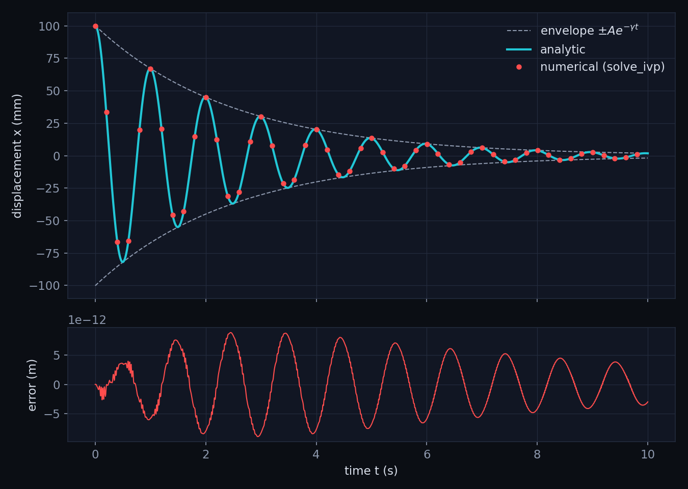

Damped harmonic oscillator
A mass on a spring with drag: derive the motion by hand, solve it on a computer, and check the two agree.
- Type
- Computational
- Tools
- Python, NumPy, SciPy, Matplotlib
- Data
- Simulated, with illustrative parameter values
Aim
Find $x(t)$ for a mass on a spring subject to a drag force, write it in closed form, and test that formula against a numerical solution of the same equation.
Theory
Equation of motion
A mass $m$ is attached to a spring of stiffness $k$ and moves through a medium that exerts a drag force proportional to speed. Newton's second law says mass times acceleration equals the sum of the forces:
$$m\frac{d^2x}{dt^2} = -kx - b\frac{dx}{dt} \tag{1}$$The term $-kx$ is Hooke's law. It points opposite to the displacement $x$, so it always pulls the mass back towards equilibrium. The term $-b\,dx/dt$ is linear drag. It points opposite to the velocity, so it always removes energy. The constant $b$ has units of kg s-1.
Divide by $m$ and move everything to the left. Writing $\dot{x}$ for $dx/dt$ and $\ddot{x}$ for $d^2x/dt^2$:
$$\ddot{x} + \frac{b}{m}\dot{x} + \frac{k}{m}x = 0 \tag{2}$$Now define two constants that each have a clear physical meaning:
$$\gamma = \frac{b}{2m}, \qquad \omega_0 = \sqrt{\frac{k}{m}}$$Here $\omega_0$ is the angular frequency the mass would oscillate at with no drag, and $\gamma$ is the damping rate, with units of s-1. The factor of 2 in $\gamma$ is a convenience: it cancels a 2 in the quadratic formula below. Equation (2) becomes
$$\ddot{x} + 2\gamma\dot{x} + \omega_0^2 x = 0 \tag{3}$$Trying an exponential
Equation (3) is linear with constant coefficients. The derivative of $e^{\lambda t}$ is just $\lambda e^{\lambda t}$, so every term stays proportional to the same exponential. This suggests trying
$$x = e^{\lambda t}, \qquad \dot{x} = \lambda e^{\lambda t}, \qquad \ddot{x} = \lambda^2 e^{\lambda t}$$where $\lambda$ is a constant to be found. Substituting into (3) and factoring out the exponential gives
$$\left(\lambda^2 + 2\gamma\lambda + \omega_0^2\right)e^{\lambda t} = 0 \tag{4}$$An exponential is never zero, so the bracket must be. This is the characteristic equation:
$$\lambda^2 + 2\gamma\lambda + \omega_0^2 = 0 \tag{5}$$For a quadratic $a\lambda^2 + B\lambda + c = 0$ the roots are $\lambda = \left(-B \pm \sqrt{B^2 - 4ac}\right)/2a$. Here $a = 1$, $B = 2\gamma$ and $c = \omega_0^2$, so
$$\lambda = \frac{-2\gamma \pm \sqrt{4\gamma^2 - 4\omega_0^2}}{2} = -\gamma \pm \sqrt{\gamma^2 - \omega_0^2} \tag{6}$$The step to the last form takes a factor of 4 out of the square root, which becomes a factor of 2 outside it and cancels the 2 in the denominator.
Three kinds of motion
What happens depends on the sign of the quantity under the square root in (6):
- Underdamped, $\gamma \lt \omega_0$. The root is of a negative number, so $\lambda$ is complex and the motion oscillates while decaying.
- Critically damped, $\gamma = \omega_0$. The root is zero, giving one repeated value $\lambda = -\gamma$. The solution is $x = (C_1 + C_2 t)e^{-\gamma t}$ and the mass returns to equilibrium as fast as possible without oscillating.
- Overdamped, $\gamma \gt \omega_0$. Both roots are real and negative, so $x$ is a sum of two decaying exponentials with no oscillation.
This project uses the underdamped case.
The underdamped solution
When $\gamma \lt \omega_0$, the quantity $\gamma^2 - \omega_0^2$ is negative. Write it as $-(\omega_0^2 - \gamma^2)$ and use $\sqrt{-X} = i\sqrt{X}$ for $X \gt 0$, where $i^2 = -1$. Defining the damped angular frequency
$$\omega_d = \sqrt{\omega_0^2 - \gamma^2} \tag{7}$$the two roots are $\lambda = -\gamma \pm i\omega_d$. Because (3) is linear, any combination of the two solutions is also a solution:
$$x(t) = e^{-\gamma t}\left(C_1 e^{i\omega_d t} + C_2 e^{-i\omega_d t}\right) \tag{8}$$A displacement has to be a real number. That is guaranteed if $C_1$ and $C_2$ are complex conjugates, so choose $C_1 = \tfrac{A}{2}e^{i\varphi}$ and $C_2 = \tfrac{A}{2}e^{-i\varphi}$ with $A$ and $\varphi$ real. The bracket in (8) then becomes $\tfrac{A}{2}\left(e^{i(\omega_d t+\varphi)} + e^{-i(\omega_d t+\varphi)}\right)$. Euler's formula gives $\cos\theta = \left(e^{i\theta} + e^{-i\theta}\right)/2$, so
$$x(t) = A\,e^{-\gamma t}\cos\left(\omega_d t + \varphi\right) \tag{9}$$This is a cosine at angular frequency $\omega_d$ multiplied by an envelope $A e^{-\gamma t}$ that shrinks exponentially. Drag therefore lowers the frequency very slightly, from $\omega_0$ to $\omega_d$, and the oscillation dies away on a timescale of $1/\gamma$.
Fixing $A$ and $\varphi$ from the starting conditions
Release the mass from rest at $x_0$, so $x(0) = x_0$ and $\dot{x}(0) = 0$. Differentiate (9) using the product rule, where the derivative of $e^{-\gamma t}$ is $-\gamma e^{-\gamma t}$ and the derivative of $\cos(\omega_d t + \varphi)$ is $-\omega_d\sin(\omega_d t + \varphi)$:
$$\dot{x}(t) = A\,e^{-\gamma t}\left[-\gamma\cos(\omega_d t + \varphi) - \omega_d\sin(\omega_d t + \varphi)\right] \tag{10}$$Setting $t = 0$ and $\dot{x}(0) = 0$ gives $\gamma\cos\varphi + \omega_d\sin\varphi = 0$, which rearranges to
$$\tan\varphi = -\frac{\gamma}{\omega_d} \quad\Rightarrow\quad \varphi = -\arctan\frac{\gamma}{\omega_d} \tag{11}$$For the amplitude, $x(0) = A\cos\varphi = x_0$. Draw a right-angled triangle with sides $\omega_d$ and $\gamma$ (as $\tan\varphi$ in magnitude is their ratio). Its hypotenuse is $\sqrt{\omega_d^2 + \gamma^2} = \omega_0$, by definition (7). Since $\varphi$ lies between $-\pi/2$ and $0$, its cosine is positive and equals the adjacent side over the hypotenuse, $\cos\varphi = \omega_d/\omega_0$. Therefore
$$A = \frac{x_0}{\cos\varphi} = x_0\,\frac{\omega_0}{\omega_d} \tag{12}$$Quality factor
The energy of the oscillator is proportional to amplitude squared, so it decays as $e^{-2\gamma t}$. The quality factor measures how lightly damped the system is:
$$Q = \frac{\omega_0}{2\gamma} \tag{13}$$For light damping, $Q$ is $2\pi$ divided by the fraction of energy lost per cycle. This comes from expanding $e^{-2\gamma T} \approx 1 - 2\gamma T$ over one period $T \approx 2\pi/\omega_0$, which is only accurate when $2\gamma T$ is small. In this project $Q$ is only about 8, so that approximation is rough and I use (13) simply as the definition.
Method
Numerical solvers step first-order equations, so rewrite the second-order equation (3) as two first-order ones by introducing the velocity $v = \dot{x}$:
$$\frac{dx}{dt} = v, \qquad \frac{dv}{dt} = -2\gamma v - \omega_0^2 x \tag{14}$$The second equation is just (3) rearranged for $\ddot{x}$. The simplest way to step this forward is Euler's method, which keeps the first term of the Taylor expansion, $x(t + \Delta t) \approx x(t) + \dot{x}(t)\,\Delta t$. The neglected term is $\tfrac{1}{2}\ddot{x}\,\Delta t^2$, so the error per step grows as $\Delta t^2$.
I used SciPy's solve_ivp, whose default method (RK45) is a Runge-Kutta scheme. It combines several slope estimates within each step to cancel the leading error terms, and it shrinks or grows the step to keep the estimated error below a tolerance. I set a relative tolerance of $10^{-10}$ and an absolute tolerance of $10^{-12}$ m, the latter so the solver still behaves sensibly when $x$ passes through zero.
Parameters were chosen for illustration: $m = 0.5$ kg, $k = 20$ N m-1, $b = 0.4$ kg s-1, and $x_0 = 0.10$ m.
import numpy as np
from scipy.integrate import solve_ivp
m, k, b = 0.5, 20.0, 0.4
x0 = 0.10
gamma = b / (2 * m)
omega0 = np.sqrt(k / m)
omega_d = np.sqrt(omega0**2 - gamma**2)
def rhs(t, y):
x, v = y
return [v, -2 * gamma * v - omega0**2 * x]
t = np.linspace(0, 10, 2000)
sol = solve_ivp(rhs, (0, 10), [x0, 0.0], t_eval=t, rtol=1e-10, atol=1e-12)
A = x0 * omega0 / omega_d # equation (12)
phi = -np.arctan(gamma / omega_d) # equation (11)
x_exact = A * np.exp(-gamma * t) * np.cos(omega_d * t + phi) # equation (9)
print(np.max(np.abs(sol.y[0] - x_exact)))Results

| Quantity | Value |
|---|---|
| $\omega_0 = \sqrt{k/m}$ | 6.3246 rad s-1 |
| $\gamma = b/2m$ | 0.4000 s-1 |
| $\omega_d$ | 6.3119 rad s-1 |
| $Q$ | 7.91 |
| $A$ | 0.10020 m |
| $\varphi$ | $-0.0633$ rad |
| Largest $|x_\mathrm{num} - x_\mathrm{exact}|$ | $8.9\times10^{-12}$ m |
Discussion
The numerical and analytic curves agree to about $10^{-11}$ m, against an oscillation amplitude of $10^{-1}$ m. That residual is set by the solver tolerance rather than by any flaw in the formula: a mistake in (9), such as a wrong phase or frequency, would produce errors of order millimetres. The damped frequency $\omega_d$ is only about 0.2% below $\omega_0$, which matches the expansion $\omega_d \approx \omega_0\left(1 - \gamma^2/2\omega_0^2\right)$ for $\gamma \ll \omega_0$.
The main limitation is the drag model. Real drag in air at moderate speeds is closer to quadratic in velocity, $-c\,|v|\,v$, which has no closed-form solution. A natural next step is to replace the drag term in (14), keep the same solver, and see how the decay changes from the exponential envelope seen here.